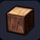 |
나무 바닥 장식재 | 연마한 목재에 테두리를 붙인 블록 ■ 색 변경 가능 ※ 빌더 하트 10 교환 (잠금 해제) |
목재 3 | 텅 빈 섬 작업대 |
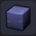 |
천 바닥 | 실을 엮어 만든 네모난 바닥 ■ 색 변경 가능 |
풀 실 5 | 텅 빈 섬 작업대 |
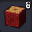 |
융단 | 푹신푹신한 털로 만들어진 블록 ■ 사각으로 나란히 놓으면 모양이 변화 / 색 변경 가능 |
솜 3 | 텅 빈 섬 작업대 |
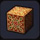 |
고급 융단 | 멋진 자수가 들어간 블록 ■ 색 변경 가능 |
솜 3 금괴 1 |
텅 빈 섬 작업대 |
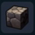 |
돌바닥 | 돌의 표면을 깎아 고르게 만든 블록 ※ 빌더 하트 10 교환 (잠금 해제) |
석재 3 석탄 1 |
텅 빈 섬 작업대 |
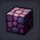 |
빨간 돌바닥 | 빨간 돌을 가공해서 만들어진 블록 | 석재 3 빨간색 염료 1 |
텅 빈 섬 작업대 |
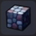 |
파란 돌바닥 | 파란 돌을 가공해서 만들어진 블록 | 석재 3 파란색 염료 1 |
텅 빈 섬 작업대 |
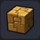 |
모자이크 바닥 | 길 등에 깔려 있는 바닥재 | 흙 1 모래 4 |
텅 빈 섬 작업대 |
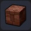 |
벽돌 바닥 | 벽돌을 삿자리 모양으로 조립해서 만든 바닥 | 흙 5 | 텅 빈 섬 작업대 |
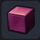 |
성의 바닥 | 아름다운 돌을 정성스럽게 가공한 블록 ■ 색 변경 가능 |
대리석 2 | 텅 빈 섬 작업대 |
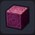 |
성마루 대형 릴리프 | 가공한 돌에 장식을 첨가한 블록 ■ 색 변경 가능 ※ 빌더 하트 10 교환 (잠금 해제) |
대리석 2 | 텅 빈 섬 작업대 |
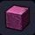 |
금이 간 성 바닥 | 엉망이 된 성의 바닥 ※ 문부르크 론달키아성에서 입수 후 제작가능 |
성의 바닥 1 | 그루터기 작업대 |
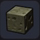 |
사교의 바닥 | 하곤성에 쓰이는 섬뜩한 바닥 | 파괴의 모래 5 뼈 1 |
텅 빈 섬 작업대 |
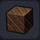 |
구리벽 | 마름모 문양을 넣은 구리벽 | 동괴 10 | 텅 빈 섬 작업대 |
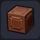 |
구리 바닥 | 장식이 들어간 구리벽 ※ 빌더 하트 20 교환 (잠금 해제) |
동괴 10 | 텅 빈 섬 작업대 |
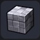 |
은 타일 벽 | 빛나는 은으로 된 타일 벽 | 은괴 3 | 텅 빈 섬 작업대 |
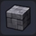 |
바랜 은 타일 벽 | 거무스름한 은으로 된 타일 벽 ※ 빌더 하트 20 교환 (잠금 해제) |
은괴 1 철괴 1 |
텅 빈 섬 작업대 |
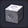 |
은 바닥 | 문양이 들어간 번쩍이는 은 블록 ※ 빌더 하트 20 교환 (잠금 해제) |
은괴 3 | 텅 빈 섬 작업대 |
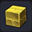 |
금 벽돌벽 | 눈부신 황금으로 된 벽돌 | 금괴 2 | 텅 빈 섬 작업대 |
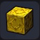 |
금의 문양 벽 | 문양이 들어간 눈부신 황금 벽돌 | 금괴 2 | 텅 빈 섬 작업대 |
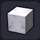 |
대리석 | 얼룩 문양이 아름다운 하얀 석재 | 출렁출렁섬 | ／ |
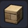 |
유적의 바닥 | 태고의 유적에 쓰였던 바닥 ※ 빌더 하트 10 교환 (잠금 해제) |
석재 2 흙 2 |
텅 빈 섬 작업대 |
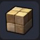 |
유적의 벽 | 태고의 유적의 벽에 쓰였던 블록 ※ 빌더 하트 10 교환 (잠금 해제) |
석재 2 흙 2 |
텅 빈 섬 작업대 |
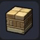 |
유적의 문양 벽 | 태고의 유적 쓰였던 문양 블록 ※ 빌더 하트 10 교환 (잠금 해제) |
석재 2 흙 2 |
텅 빈 섬 작업대 |
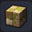 |
유적의 풀벽 | 풀이 난 태고의 유적의 벽 블록 ※ 텅 빈 섬 산정상에서 입수 후 제작 가능 |
유적의 벽 1 초원 씨앗 1 텅 빈 섬 |
그루터기 작업대 |
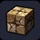 |
유적의 갈라진 벽 | 금이 간 태고의 유적의 벽 블록 ※ 텅 빈 섬 산정상에서 입수 후 제작 가능 |
텅 빈 섬, 유적의 벽 1 | 그루터기 작업대 |
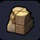 |
깨진 유적의 벽 | 세월이 흐르면서 부서진 유적 벽 ※ 텅 빈 섬 산정상에서 입수 후 제작 가능 |
텅 빈 섬、유적의 벽 1 | 그루터기 작업대 |
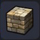 |
돌 벽돌 | 태고의 유적에 쓰였던 돌 벽돌 ※ 빌더 하트 10 교환 (잠금 해제) |
석재 2 흙 2 |
텅 빈 섬 작업대 |
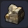 |
깨진 돌 벽돌 | 태고의 유적에 쓰였던 부서진 돌 벽돌 ※ 텅 빈 섬 산정상에서 입수 후 제작 가능 |
텅 빈 섬, 돌 벽돌 1 | 그루터기 작업대 |
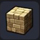 |
모래 벽돌 | 오랜 세월이 흐르면서 빛이 바랜 벽돌 | 모래 5 | 텅 빈 섬 작업대 |
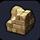 |
깨진 모래 벽돌 | 비바람으로 인해 엉망이 된 벽돌 ※ 텅 빈 섬 산정상에서 입수 후 제작 가능 |
텅 빈 섬 해변에서 산정상 입구 기둥 모래 벽돌 1 |
그루터기 작업대 |
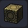 |
성소 - 돌바닥(흑) | 신비한 문양이 그려진 검은 블록 ※ 빌더 하트 20 교환 (잠금 해제) |
석재 3 석탄 1 |
텅 빈 섬 작업대 |
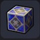 |
성소 - 돌바닥(청) | 신비로운 문양이 그려진 파란 블록 ※ 빌더 하트 20 교환 (잠금 해제) |
석재 3 마력의 수정 1 |
텅 빈 섬 작업대 |
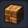 |
골렘 바위 | 골렘의 몸체와 닮은 거대 블록 ※ 빌더 하트 20 교환 (잠금 해제) |
흙 3 동괴 1 |
텅 빈 섬 작업대 |
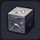 |
재 바위 | 생물의 뼈를 포함한 바위 블록 | 어둑어둑섬 | ／ |
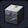 |
뼈 바위 | 뼈를 대량 포함한 바위 블록 | 어둑어둑섬(산 정상, 해골모양이 살짝보임) | ／ |
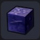 |
독늪의 흙 | 독늪의 주변에서 채취할 수 있는 흙 블록 | 어둑어둑섬 | ／ |
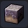 |
메마른 초원의 흙 | 메마른 풀이 남은 흙 블록 | 어둑어둑섬 | ／ |
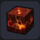 |
마그마 바위 | 식어서 굳은 마그마 블록 | 번쩍번쩍섬 | ／ |
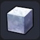 |
눈 | 차가운 눈 블록 | 꽁꽁섬, 문부르크섬 | ／ |
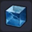 |
얼음 | 추위로 물이 꽁꽁 언 투명한 블록 | 꽁꽁섬 | ／ |
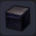 |
까만 용암 | 광택이 나고 굉장히 튼튼한 검은 바위 블록 | 오카무르섬의 용암 지대 감옥섬의 소각로 문부르크섬 하곤군의 배 번쩍번쩍섬(용암 근처) |
／ |
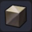 |
파괴의 모래 | 파괴의 힘에 의해 변질된 모래 블록 | 으스스섬, 파괴신의 허물 | 금단의 연성대 |
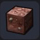 |
전장의 흙 | 수많은 전쟁의 역사가 새겨진 흙 | 꽁꽁섬 | ／ |
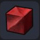 |
붉은 모래 | 붉은 모래 블록 | 으스스섬 | ／ |
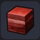 |
붉은 마블 바위 | 붉은 흙과 바위가 층을 이룬 블록 | 으스스섬 | ／ |
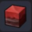 |
붉은 모래마블 바위 | 붉은 흙과 바위가 층을 이루고 모래가 낀 블록 | 으스스섬 | ／ |
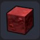 |
붉은 바위 | 표면이 붉은 바위 블록 | 으스스섬 | ／ |
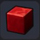 |
불꽃색 바위 | 불꽃처럼 새빨간 바위 블록 | 어둑어둑섬 | ／ |
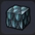 |
커다란 비늘 | 파괴신 시도의 강인한 비늘 | 으스스섬 | ／ |
| 석탄 광맥 | 석탄이 섞인 흙 블록 | 뒹굴뒹굴섬 | ／ | |
| 구리광맥 | 구리가 섞인 흙 블록 | 번쩍번쩍섬 | ／ | |
| 철광맥 | 철이 섞인 바위 블록 | 뒹굴뒹굴섬 | ／ | |
| 마그네 광맥 | 금속을 밀거나 당기는 힘을 지닌 돌을 함유한 바위 | 어둑어둑섬 | ／ | |
| 은광맥 | 은이 섞인 바위 블록 | 번쩍번쩍섬 | ／ | |
| 금광맥 | 금이 섞인 바위 블록 | 첨벙첨벙섬 | ／ | |
| 블루 메탈 광맥 | 푸른 광석이 섞인 바위 블록 | 번쩍번쩍섬 | ／ | |
| 붉은 돌 광맥 | 빨간 광석이 섞인 바위 블록 | 번쩍번쩍섬 첨벙첨벙섬 |
／ | |
| 미스릴 광맥 | 미스릴이 섞인 바위 블록 | 뒹굴뒹굴섬 | ／ | |
| 오리할콘 광맥 | 전설의 금속이 섞인 바위 블록 | 어둑어둑섬 | ／ | |
| 다이아몬드 광맥 | 다이아몬드가 잠들어 있는 광맥 | 뒹굴뒹굴섬 | ／ | |
| 염료 광맥 - 하양 | 하얀색 염료를 머금은 블록 ■ 부수면 하얀염료를 손에 넣을 수 있다 |
뒹굴뒹굴섬 | ／ | |
| 염료 광맥 - 검정 | 검은색 염료를 머금은 블록 ■ 부수면 검은색 염료를 손에 넣을 수 있다 |
출렁출렁섬 | ／ | |
| 염료 광맥 - 보라 | 보라색 염료를 머금은 블록 ■ 부수면 보라색 염료를 손에 넣을 수 있다 |
출렁출렁섬 | ／ | |
| 염료 광맥 - 분홍 | 분홍색 염료를 머금은 블록 ■ 부수면 분홍색 염료를 손에 넣을 수 있다 |
꽁꽁섬 | ／ | |
| 염료 광맥 - 빨강 | 빨간색 염료를 머금은 블록 ■ 부수면 빨간색 염료를 손에 넣을 수 있다 |
번쩍번쩍섬 | ／ | |
| 염료 광맥 - 초록 | 초록색 염료를 머금은 블록 ■ 부수면 초록색 염료를 손에 넣을 수 있다 |
번쩍번쩍섬 | ／ | |
| 염료 광맥 - 노랑 | 노란색 염료를 머금은 블록 ■ 부수면 노란색 염료를 손에 넣을 수 있다 |
꽁꽁섬 | ／ | |
| 염료 광맥 - 파랑 | 파란색 염료를 머금은 블록 ■ 부수면 파란색 염료를 손에 넣을 수 있다 |
뒹굴뒹굴섬 | ／ | |
| 블랙 블록 | 검은색 블록 | 하얀 바위 1 | 도트 디코더 | |
| 그레이 블록 | 회색 블록 | 하얀 바위 1 | 도트 디코더 | |
| 화이트 블록 | 흰색 블록 | 하얀 바위 1 | 도트 디코더 | |
| 마롱 블록 | 밤색 블록 | 하얀 바위 1 | 도트 디코더 | |
| 레드 블록 | 빨간색 블록 | 하얀 바위 1 | 도트 디코더 | |
| 퍼플 블록 | 보라색 블록 | 하얀 바위 1 | 도트 디코더 | |
| 핑크 블록 | 분홍색 블록 | 하얀 바위 1 | 도트 디코더 | |
| 그린 블록 | 초록색 블록 | 하얀 바위 1 | 도트 디코더 | |
| 라임 블록 | 연초록색 블록 | 하얀 바위 1 | 도트 디코더 | |
| 오렌지 블록 | 주황색 블록 | 하얀 바위 1 | 도트 디코더 | |
| 옐로 블록 | 노란색 블록 | 하얀 바위 1 | 도트 디코더 | |
| 네이비 블록 | 군청색 블록 | 하얀 바위 1 | 도트 디코더 | |
| 블루 블록 | 파란색 블록 | 하얀 바위 1 | 도트 디코더 | |
| 베이지 블록 | 베이지색 블록 | 하얀 바위 1 | 도트 디코더 | |
| 아쿠아 블록 | 하늘색 블록 | 하얀 바위 1 | 도트 디코더 | |
| 실버 블록 | 은색 블록 | 하얀 바위 1 은 1 |
도트 디코더 | |
| 골드 블록 | 금색 블록 | 하얀 바위 1 금 1 |
도트 디코더 | |
| 추억의 초원 | 그리운 분위기가 풍기는 풀 블록 | 풀 실 3 | 도트 디코더 | |
| 추억의 벽돌 | 추억이 되살아나는 벽돌 블록 | 흙 3 | 도트 디코더 | |
| 추억의 벽 | 복고풍 색조의 블록 | 석재 3 | 도트 디코더 | |
| 눈알 벽 | 번뜩이는 눈이 달린 이상한 블록 ※ 빌더 하트 20 교환 (잠금 해제) |
하얀 바위 3 | 텅 빈 섬 작업대 |